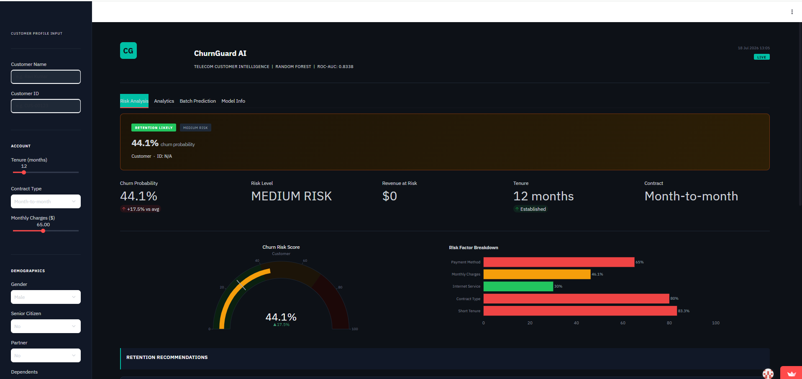

I'm Jidiga Charan Reddy — a final-year CS & Business Systems student who builds end-to-end ML pipelines and analytics dashboards, then actually deploys them. Not notebooks. Live apps.
Passionate about turning raw data into real business impact — with hands-on experience building end-to-end analytics and ML solutions across e-commerce, telecom, and job market domains.
Delivered 3 production-grade ML projects across 100K+ real records — including churn prediction (ROC-AUC 0.8338) and salary forecasting (MAE $34,885) — all live on Streamlit Cloud. Certified in SQL (Advanced) by HackerRank and Data Analytics by Deloitte Australia.
Currently seeking a Data Analyst or Data Scientist role where I can contribute from day one.
Six end-to-end builds — from raw data to deployed, working apps.
ML pipeline predicting telecom churn on 7,032 records with real-time inference and explainable AI — deployed as a live prediction app with an interactive Power BI risk dashboard.

End-to-end analytics pipeline on 119,143 real transactions — from raw ingestion to ML deployment and executive dashboarding.
Live platform analyzing 929 real US job listings across 6 data roles for skill demand, sentiment, and salary trends.
AI weather system trained on 142,193 Australian weather records, combining live data with ML predictions for industry task recommendations.
Multi-capability conversational AI agent with 14 tools, real-time web search, and a ChatGPT-style interface.
14-sheet DCF valuation model for TCS, Infosys, HCL Tech, Tech Mahindra, and Wipro using real Screener.in data (FY22–FY25).
Analyzed manufacturing telemetry data using Tableau to identify machine downtime across 4 global factories; built an Excel classification model to assess gender pay equality.
View Certificate ↗Exploratory data analysis, risk profiling, AI-based delinquency prediction, and AI-driven collections strategy development.
View Certificate ↗Complex queries, joins, CTEs, window functions, and real-world database problem-solving.
View Certificate ↗Open to Data Analyst and Data Scientist roles. Reach out — I reply fast.